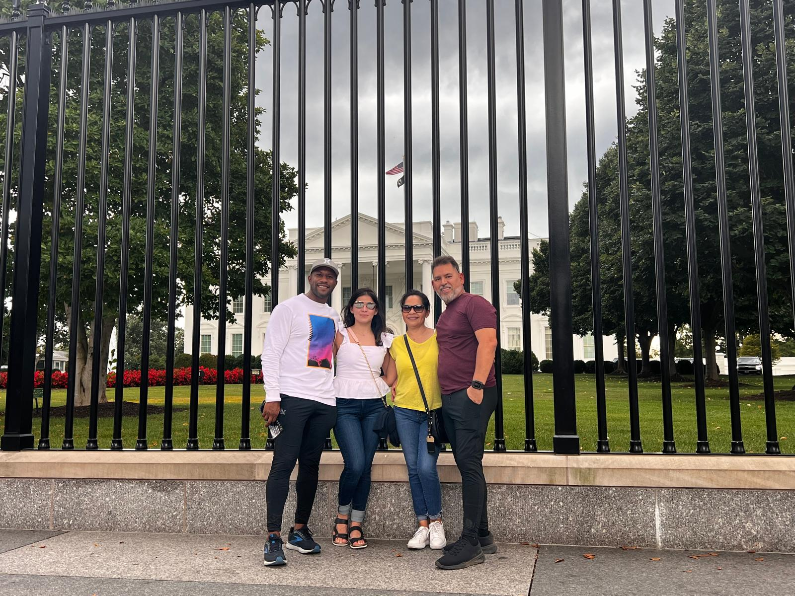
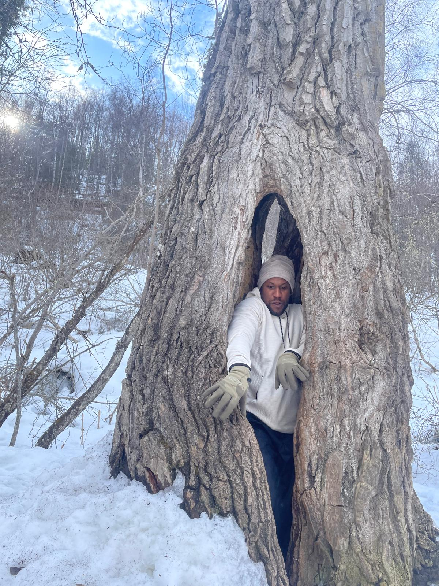
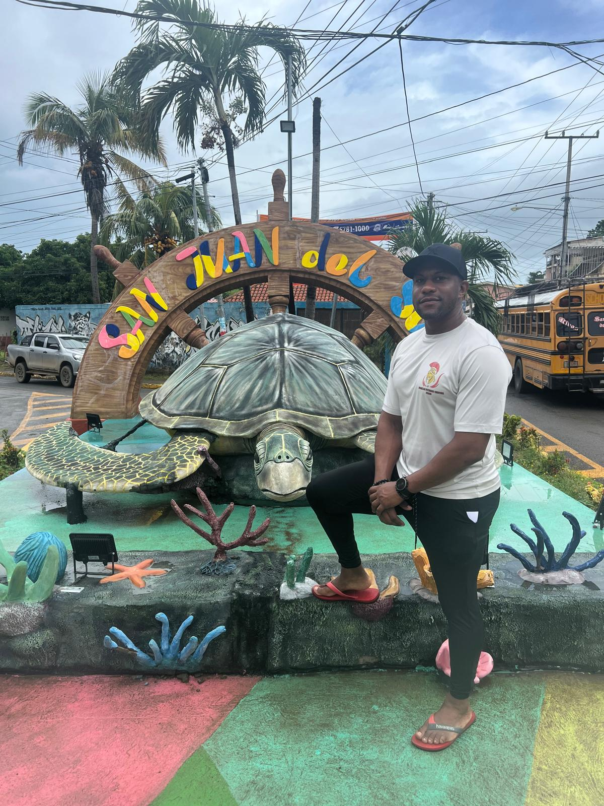
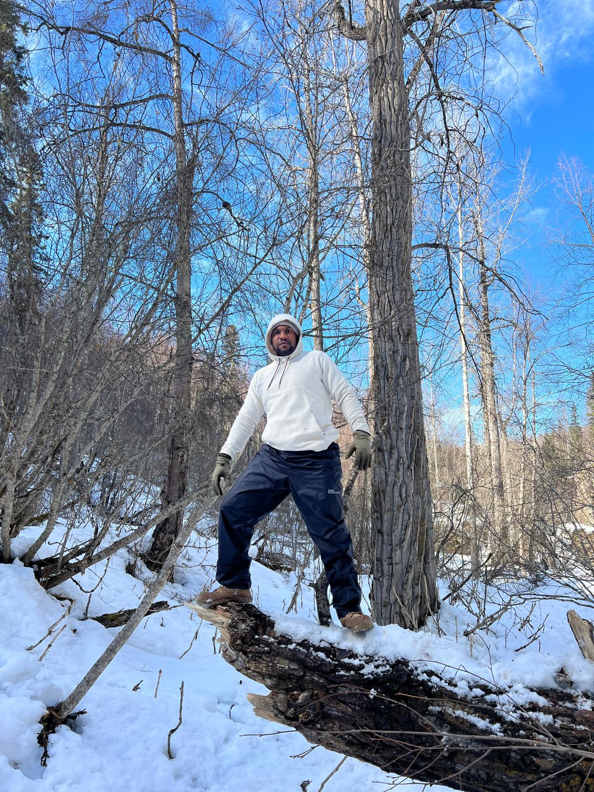
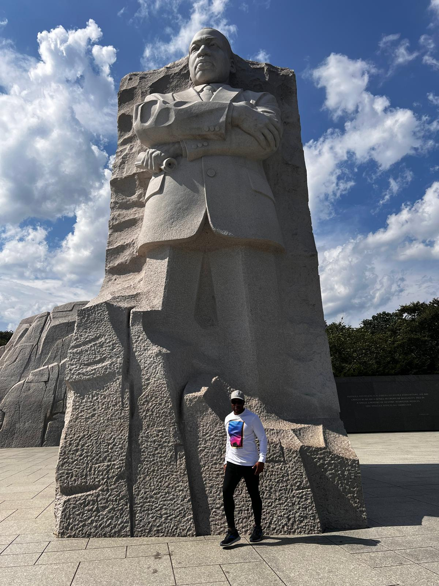
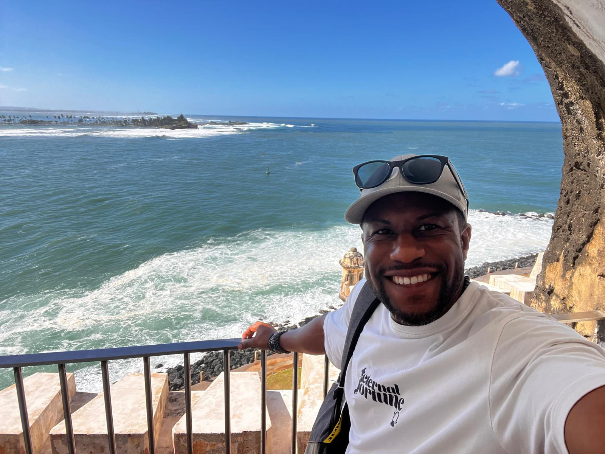

COLONIAL CHARM
COLONIAL CHARM
Granada
Moorish courtyards, pastel facades, horse-drawn carriages and gateway to the 365 Isletas of Lake Nicaragua.
Your personal guide to destinations, Pacific beaches, volcanoes and mountain hidden gems — all explored firsthand across more than a decade of travel.
From historic colonial plazas to lush cloud forests, surf bays and Caribbean islands — here is my firsthand take on every region.
COLONIAL CHARM
Moorish courtyards, pastel facades, horse-drawn carriages and gateway to the 365 Isletas of Lake Nicaragua.

CULTURE & HISTORYThe intellectual heart of the country with the grand white rooftop cathedral, vibrant murals and volcano boarding.
 VOLCANIC WONDER
VOLCANIC WONDER
An enchanting hour-glass island rising from Lake Nicaragua with twin volcanoes Concepción and Maderas, cloud forests and sacred petroglyphs.

CARIBBEAN GEMBig Corn and Little Corn offer tranquil Afro-Caribbean pace, coral reef diving, fresh spiny lobster and car-free island living.

AUTONOMOUS COASTRich Creole and indigenous heritage, colourful reggae rhythms, vibrant seafood markets and coastal river access.
 PACIFIC SURF & SUNSET
PACIFIC SURF & SUNSET
A lively horseshoe bay brimming with sunset beachfront eateries, surf shuttles to world-class breaks and welcoming expat energy.
 EMERALD COAST
EMERALD COAST
Raw, unspoiled coastlines with 300+ days of offshore winds, legendary A-frame waves and a close-knit Canadian & surf community.

VOLCANIC HIGHLANDSHome to San Cristóbal, Nicaragua’s highest active volcano, sugar cane plantations and serene Pacific estuaries.

TWO-STOREY CITYThe mountain "City of Two Floors", famous for its celebrated July patron festivities, artisan leathercraft and authentic rural warmth.
 COFFEE COUNTRY
COFFEE COUNTRY
Cool alpine mountain air, shade-grown organic coffee estates, cascading waterfalls and refreshing pine-scented trails.
World-renowned hand-rolled cigars, expressive revolutionary murals, cool plateau breezes and dramatic Miraflor nature reserve.
 FOLKLORE CAPITAL
FOLKLORE CAPITAL
The artisanal soul of Nicaragua: vibrant woven hammock markets, traditional marimba music and an active glow in Masaya Volcano's crater.
 TRANSIT & CAPITAL
TRANSIT & CAPITAL
The bustling international transit gateway; useful for logistics, embassy services and flights, though most travellers swiftly head to the coast or colonies.

RUGGED RANCHLANDSRolling volcanic foothills, proud cattle ranches, ancient pre-Columbian stone monoliths and quiet, welcoming traditional towns.
Nicaragua's Pacific coast is blessed with dramatic rocky headlands, wide sandy bays and year-round offshore breezes created by Lake Nicaragua.
Playa Remanso: Gentle waves and my personal top pick for relaxed afternoon swims and fish tacos.
Playa Yankee: Powerful left-hand barrel and unspoiled wild cliffs.
Playa Maderas: The iconic social surf hub with stunning sea stacks.
Playa Majagual: The golden standard for quiet, unforgettable Pacific sunsets.
Nineteen active and dormant volcanoes line the Pacific ridge, feeding crater lakes and fertile cloud forests.
Every traveller has different rhythms and preferences. Here are my firsthand pairings based on your travelling company.
Gentle boat rides in the Isletas, safe calm-water beaches like Remanso, artisan markets in Masaya, and comfortable family-friendly boutique hotels.
From sunset dinners at El Zaguán in Granada to private oceanfront eco-lodges in Popoyo and stargazing on Ometepe — romance is effortless throughout.
Volcano boarding at Cerro Negro, surfing powerful breaks at Playa Yankee, hiking through dense cloud forest up Volcán Maderas, and deep-sea sport fishing.
Slow ocean breezes, beachfront yoga pavilions, listening to morning howler monkeys in the highlands, and disconnecting from the Western 24/7 grind.
Whether your idea of an unforgettable day is surfing sunrise barrels or sampling street-stall nacatamales in a centuries-old plaza.
True credibility requires honesty. Not every city fits every traveller's rhythm.
Probably the most controversial thing to say as it is the capital, but honesty is why ZIONNICA exists. I live just outside of Miami and don't go there; I'm not opposed to dense cities—I love Brooklyn, Cartegena, Paris, and San Francisco.
Managua simply isn't my vibe. I find a lack of preserved street culture, higher expenses without corresponding value, and it isn't very scenic.
My Travel Hack: When I fly into Augusto C. Sandino Airport (MGA), I pick up my rental car or hail an inDrive, and within 30 minutes I'm in Masaya or Granada where I can breathe fresh air, relax, and let my guard down.
Navigating transport with confidence and understanding regional celebration calendars.
Whether you are planning a two-week escape or considering calling this coastline home, let's start with real, honest advice.
Whether you have travel questions, want restaurant suggestions, or need referrals to trusted attorneys and realtors.